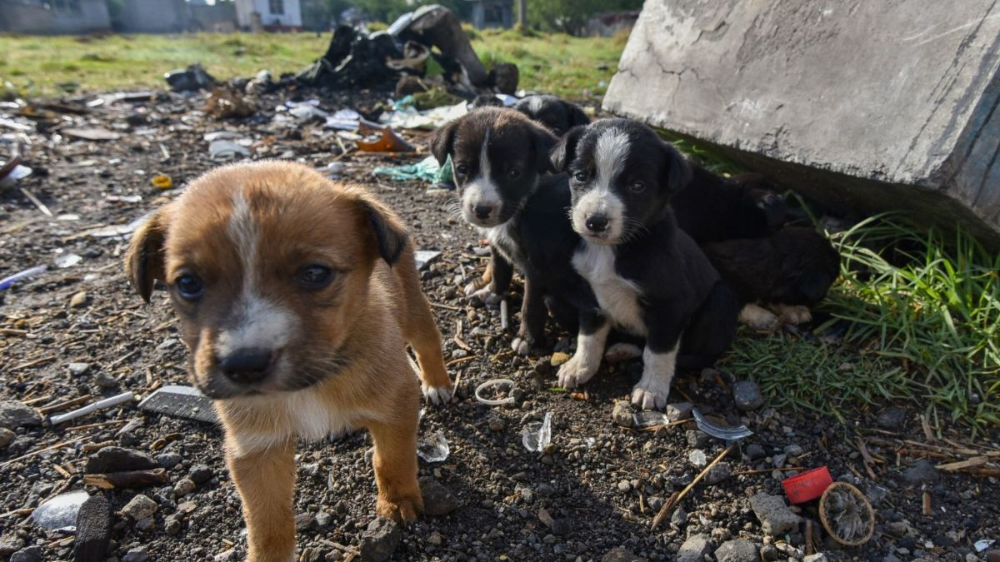

Bienvenidos a Amigo Fiel
¡Bienvenidos a nuestro sitio web! Este espacio está
dedicado a los perros, esos compañeros leales que
nos brindan cariño, alegría y compañía.
Nuestro objetivo es fomentar el cuidado responsable,
la adopción y el respeto hacia los animales,
además de informar sobre sus necesidades.

La importancia de adoptar
Muchos perros necesitan una familia que les ofrezca
protección, alimento, atención veterinaria y afecto.
La adopción responsable puede darles una nueva
oportunidad para tener una vida digna.
Antes de adoptar, debemos considerar el espacio,
el tiempo y los recursos necesarios para cuidar
adecuadamente a nuestra mascota.
Conoce la sección de adopción